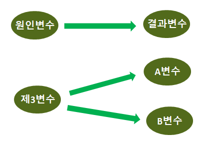
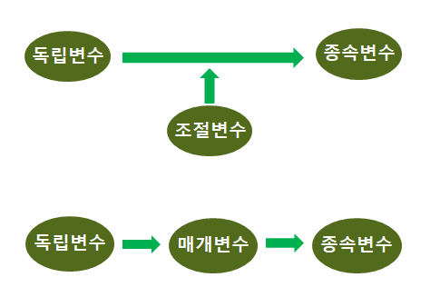

2 통계의 기초 개념
이 장은 통계의 기본적 용어와 개념을 설명합니다.
위키피디아의 통계학의 역사 에 따르면, 18세기 근대 주권국가의 탄생으로 현대적 의미의 통계학이 시작되었다고 합니다. 자료를 바탕으로 현실을 정확하게 파악하여 올바른 의사결정을 하려는 노력이지요. 통계학은 지금은 수학적인 수식을 다루는 학문으로 발전했습니다. 그러나 자료와 정보에 근거해서 의미있는 해석과 결과를 도출하는 목적은 여전히 유효합니다.
2.1 모집단과 표본
2.1.1 모집단과 표본의 개념
우리가 관심을 가지고 조사하려는 전체 집단을 모집단 population 이라고 합니다. 대한민국 국민, 20대 한국인, 한국대학교 학생, 2023년 통계와 분석 수강생 등이 모집단이 될 수 있지요. 사람이 아닌 사물이나 단체 등도 모집단이 될 수 있어요. 한국전자에서 생산하는 텔레비전, 전세계 국가 등이 그런 모집단의 예입니다. 이론적으로 무한히 많은 개체를 가진 모집단을 무한모집단이라하고, 유한한 수의 개체를 가진 모집단을 유한모집단이라고 합니다.
모집단이 아주 크거나 기타 이유로 모집단 전체를 조사하기가 어려울 수 있어요. 이럴 때 모집단에서 일부를 뽑아 조사하여 모집단의 속성을 추정할 수 있는데 이런 일부집단을 표본 sample 이라고 합니다. 표본이 포함한 개체의 수를 표본 크기 sample size 라고 합니다.
모집단을 전부 조사하는 것이 전수조사 Census 입니다. 표본을 조사하는 건 표본조사입니다. 통계는 표본조사를 통해 얻은 결과를 모집단에 일반화시킵니다. 전수조사는 시간과 노력이 많이 드는 단점이 있지만, 여러 장점도 있습니다.
- 모집단에 대해 정확히 알게 된다.
- 희귀한 사례에 대해 조사하기 쉽다.
- 표본조사의 결과를 더 정확히 추정하게 해준다.
표본조사는 전수조사에 비하여 이런 장점이 있습니다.
- 시간과 노력, 비용을 절약해서 효율적이다.
- 적은 수를 조사하므로 많은 항목을 상세히 조사할 있다.
- 전수조사의 미진한 부분이나 추가할 부분을 보완할 수 있다.
모집단의 속성을 측정한 측정값들을 통계처리한 수치를, 즉 평균이나 표준편차 등등을 모수 parameter 라고 합니다. 표본의 속성을 측정한 측정값들을 통계처리한 수치를 통계량 statistic 이라고 합니다. 통계량은 방법의 의미와 계산된 값의 의미, 양쪽으로 모두 사용됩니다. (평균을 예로 들면, 방법; ‘평균은 대표성이 좋다’, 값; ‘키 평균은 172cm다’) 통계량은 모수를 추정하려고 존재합니다. 통상 모수는 그리스 문자로 적고 통계량은 영어로 적습니다.
| 통계 | | | 모수 (발음) | 통계량 | ||
|---|---|---|---|---|---|
| 평균 | | | \(\mu\) ( mu ) | 모평균 | \(m\), \(\bar x\) | 표본평균 |
| 분산 | | | \(\sigma^{2}\) ( - ) | 모분산 | \(s^{2}\) | 표본분산 |
| 표준편차 | | | \(\sigma\) ( sigma ) | 모표준편차 | \(s\) | 표본표준편차 |
| 상관계수 | | | \(\rho\) ( rho ) | 모상관계수 | \(r\) | 표본상관계수 |
| 그리스어 | 발음 | 그리스어 | 발음 | 그리스어 | 발음 |
|---|---|---|---|---|---|
| \(\alpha\) | alpha | \(\iota\) | iota | \(\sigma\) | sigma |
| \(\beta\) | beta | \(\kappa\) | kappa | \(\tau\) | tau |
| \(\gamma\) | gamma | \(\lambda\) | lambda | \(\upsilon\) | upsilon |
| \(\epsilon\) | epsilon | \(\mu\) | mu | \(\phi\) | phi |
| \(\zeta\) | zeta | \(\nu\) | nu | \(\chi\) | chi |
| \(\sigma\) | sigma | \(\xi\) | xi | \(\psi\) | psi |
| \(\eta\) | eta | \(\pi\) | pi | \(\omega\) | omega |
| \(\theta\) | theta | \(\rho\) | rho |
모집단, 표본, 전수조사, 표본조사, 무한모집단, 유한모집단, 표본 크기, 모수, 통계량
2.2 기술통계학과 추론통계학
우리가 관심을 가지는 집단을 조사하여 그 집단의 특성을 수치로 표현하는 방법을 기술통계학 descriptive statistics 이라고 합니다. 기술통계학은 데이터를 요약하고 단순화하여 조사한 대상의 특성을 유용한 형태의 특성치로 가공하여 내놓습니다. 이러한 특성치는 평균, 표준편차, 분산, 비율, 회귀계수 등이 있습니다. 표본을 조사하는 이유는 모집단을 알기 위함입니다. 표본조사의 결과인 통계량을 이용하여 모수를 추정하는 방법을 추론통계학 inferential statistics 이라고 합니다.
기술통계학은 대체로 특성을 있는 그대로 기술하는 것이라서 이해하기가 쉽습니다. 그러나 추론통계학은 추론에 이론적 뒷받침이 필요해서 지적 노력이 조금 필요합니다.
통계량에서 모수를 추정하는 과정에 여러 요소들이 관여하므로 합리적인 방법을 추구해야 합니다. 예를 들어, 표본 크기가 추론 결과에 영향을 줄 수 있습니다. 그래서 확률 probability 이론이 끼여듭니다. 표본의 통계량에서 모집단의 모수를 추론할 때, 그 추론이 얼마나 신뢰할 만한가 하는 정도를 확률 이론으로 계산하는 겁니다. 예를 들어, 모집단의 키 평균이 170cm이라고 가정하고 (\(\mu\)=170), 그 모집단에서 100명의 표본을 뽑아 키 평균을 계산하면 172cm가 (\(\bar{x}\)=172) 나올 확률이 얼마나 되는가? 이렇게 되는 겁니다.
신문에서 선거철에 여론조사를 발표하면서 흔히 “A후보의 지지율이 조사결과 56%인데 95% 신뢰도로 오차범위가 \(\pm\) 3%입니다” 라고 말합니다. 표본조사로 지지율이라는 통계량이 56%가 나왔는데 과연 이게 모집단의 모수와 동일할 확률이 얼마나 되는가? 모수가 53%-59% 사이에 있을 확률이 95%다. 이런 식으로 확률 이론이 추론통계학에 기반을 제공하는 겁니다. 앞의 기사에서 \(\pm\) 3%는 오차 허용범위를 말하는데 이것은 표집할 때 나타나는 모집단과 표본의 차이에서 발생합니다. 표본에서 A 후보를 지지하는 사람의 비율이, 즉 지지율이 모집단과 동일한 경우도 있겠지만 그보다는 모집단보다 더 높거나 더 낮을 가능성이 많습니다. 이렇게 표집의 과정에서 오차가 발생하는 걸 표집오차라고 하고 그 결과로 오차 허용범위가 생깁니다.
자, 그래서 기술통계학에서 추론통계학으로 넘어가는 중간에 확률 이론을 살짝 맛보고 가게 됩니다. 정말 기본 중의 기본만 살짝 거쳐가는 겁니다.
기술통계학, 추론통계학, 확률, 표집오차, 오차 허용범위
2.3 측정 척도
측정 척도 measurement scale 는 연구나 조사에서 측정하려는 특성의 성격과 측정 방법에 따라 구분되는 척도입니다. 측정 척도에는 명목척도, 서열척도, 등간척도, 비율척도 등, 네 종류가 있습니다.
2.3.1 명목척도
명목척도 nominal scale 는 관찰 대상의 특성을 범주 category 나 종류로 구분하는 것입니다. 예를 들어, 사람을 남자와 여자로 구분하는 것. 또는 옷 색깔을 빨강, 파랑, 노랑 등 색으로 구분하는 것 등이 있습니다. 또 사람의 거주지를 서울, 경기도, 강원도 등으로 구분하는 것도 여기에 속합니다.
범주나 종류는 수치로 크기를 측정할 수 없는 것으로 명목 척도를 숫자로 나타낸다고 해도 그것은 크기가 의미가 없습니다. 예를 들어, 남자를 1로 여자를 2로 적어 놓는다고 해도 숫자에 구분 이외의 기능이 없습니다. 그래서 남자를 2로 여자를 1로 적어도 아무런 차이가 없습니다.
2.3.2 서열 척도
서열 척도 ordinal scale 는 측정 대상인 특성을 서열로 구분하는 것입니다. 즉 절대적인 수치가 없고 상대적인 서열만 측정하는 것입니다. 예를 들어, 올림픽 마라톤 경기에서 1등부터 차례로 순서를 매기는 것이 그것입니다. 달린 시간이 얼마인가는 상관없이 그저 상대적인 서열만 측정하는 방법입니다.
미디어의 신뢰도를 측정하면서, 여러 신문사 방송사의 이름을 죽 제시하고 신뢰도 순서로 순위를 매기도록 하는 게 서열 척도입니다. 브랜드 선호도를 조사할 때도 이 방법을 사용하는 경우가 많습니다. 예를 들어, 소비자에게 여러 맥주 브랜드를 모두 알려주고 선호도의 순서로 적으라고 하면 서열 척도 측정입니다.
2.3.3 등간 척도
등간 척도 interval scale 는 측정 눈금 간의 간격이 모두 동일한 것으로 간주하는 방법입니다. 온도를 예로 들면, 11도와 12도의 1도 차이는 32도와 33도의 1도 차이와 동일한 의미(간격)를 가집니다. 우리가 설문조사에서 5점 척도나 7점 척도를 사용한다면 이것이 등간 척도라고 가정하는 겁니다. 즉 1점과 2점의 1 차이는 5점과 6점의 1 차이와 동일한 크기와 의미를 가졌다고 보는 겁니다.
학력고사의 등급이 1등급, 2등급, …, 9등급 이렇게 설정됩니다. 이때 1등급과 2등급의 1 차이는 5등급과 6등급의 1 차이와 같지 않습니다. 학력고사 점수의 차이도 같지 않고 그 안에 포함되는 수험생의 수도 같지 않습니다. 이것은 등간척도가 아닙니다. 그래서 학력고사 등급은 대체로 순위 척도로 간주해야 하고, 경우에 따라서는 명목 척도로 다루어야 합니다. 물론 학력고사 등급을 등간척도로 가정하고 통계 분석을 하는 경우도 있습니다만, 그것은 펀의를 위한 가정이고 여전히 학력고사 등급은 등간 척도가 아닙니다.
등간 척도에서는 0이 의미를 가지지 않고 그냥 척도 수준의 하나에 불과합니다. 등간척도에서 0이 절대적 기준의 의미를 가지면 비율 척도가 됩니다.
2.3.4 비율 척도
등간 척도에서 0이 절대적 ’없음’의 의미를 가지면 비율 척도 radio scale 가 됩니다. 0을 기준으로 비율을 계산할 수 있기 때문입니다. 즉 2 점은 4 점의 50%라고 말할 수 있습니다. 비율 척도는 척도 중에서 가장 수준이 높은 척도라고 간주합니다. 무게나 길이는 대표적인 비율 척도입니다. 재산도 빚은 -이고 자산은 +이지만, 0 이 ’없음’을 의미하므로 비율 척도입니다.
등간 척도와 비율 척도의 차이를 이해하기 위해서 온도를 예로 들겠습니다. 온도를 재는 척도는 섭씨와 화씨가 있습니다. 둘 다 0° 가 있지만 그 온도는 서로 다릅니다. 예를 들어, 섭씨 0° 가 화씨에서는 32° 이고 화씨 0° 는 섭씨 -18° 입니다. 섭씨나 화씨의 온도 척도에서는 0° 가 절대적 “없음”을 나타내지 못합니다. 따라서 “몇 배가 덥다”는 비율의 표현을 사용하면 안 됩니다.
절대온도를 나타내는 켈빈 K는 0 이 의미가 있으므로 비율 척도입니다. 온도는 분자의 운동량으로 결정되는데 켈빈 K의 0도는 측정 물체의 분자 운동량이 0 이므로 더 이상 온도가 내려갈 수 없는 진짜 0 도입니다. 그래서 켈빈에서는 마이너스 온도가 없습니다. 비율 척도라서 100K보다 200K가 두 배 높다고, 즉 온도(분자 운동량)가 200% 라고 말할 수 있습니다.
| 섭씨 C | 화씨 F | 켈빈 K | ||
|---|---|---|---|---|
| 30 | = | 86 | = | 303 |
| 60 | = | 140 | = | 333 |
| 30 \(\rightarrow\) 60 (100%) | 86 \(\rightarrow\) 140 (63%) | 303 \(\rightarrow\) 333 (10%) |
위의 표를 보면 각 온도 척도에 따라 동일한 온도가 다른 수치로 표시 됩니다. 그래서 섭씨에서 30도가 60도로 오르면 100% 증가가 되지만, 화씨에서 같은 온도인 86도가 140도로 오르면 63% 증가가 됩니다. 역시 켈빈에서 동일한 온도인 303도에서 333도로 오른 것이므로 10% 증가입니다. 이 셋의 수치 중에서 켈빈의 10%만이 타당하고 나머지는 틀립니다. 왜냐하면, 켈빈의 0도만이 ’없음’이라는 기준을 충족하는 비율 척도이기 때문입니다.
등간 척도와 비율 척도는 얼핏 봐서 이용하는 데 별 차이가 없어보이지만 현실에서 큰 실수를 야기할 수 있습니다. 예를 들어, 화학 공장에서 두 물질을 섞어 새 물질을 만드는데 반응 온도는 10°C입니다. 사장이 생산량을 2배 늘리라고 했는데 온도(분자 활동)가 2배 늘면 생산량이 2배 증가하므로 공장장이 반응 온도를 20°C로 올렸습니다. 과연 원하는 생산량이 나왔을까요? 겨우 3.6% (=10 \(\div\) 273) 늘었습니다. 10°C가 283 K이므로 반응온도를 2배 올리려면 566 K (=283 \(\times\) 2) 로, 즉 293°C로 올려야 합니다. 두 배, 세 배 등 비율을 적용하려면 반드시 비율 척도를 사용해야 합니다.
2.4 변수
변수 variable 는 측정 단위의 특성을 측정한 값의 이름입니다. 만일 키가 조사 대상이면 키를 측정하게 되는데, 사람이 측정 단위이고 ’키’가 변수입니다. 측정한 키의 값들이, 예를 들어 173cm나 167cm 같은 값들이, 변수값이 됩니다. 만일 “나이’를 조사했으면 나이가 변수가 됩니다.
R 프로그래밍에서 변수는 어떤 값을 저장하는 장소의 이름입니다. 예를 들어, x <- 3 이라고 하면 x 라는 변수에 3을 저장합니다. 이 장에서는 통계의 개념을 설명하므로 당연히 변수를 통계학에서 정의한 의미로 사용합니다. R과 통계학에서 동일한 이름을 사용하는 이유는 그 둘이 유사하기 때문이므로 나중에는 둘이 같은 것이라고 인식하게 됩니다.
2.4.1 정량 변수와 정성 변수
정량 변수 quantitative variable 는 변수값을 수치로 표현하는 변수입니다. 정량 변수는 양적 변수 또는 계량적 변수라고도 부릅니다. 무게, 길이, 은행 잔고, 통계시험 점수 등이 그 예입니다.
정성 변수 qualitative 는 변수값을 수치로 표현하지 못하는 변수입니다. 정성 변수는 질적 변수라고도 부릅니다. 경기도나 충청도 등 행정구역으로 구분하는 거주지, 여자나 남자로 구분하는 성별, 파랑이나 노랑 등 색으로 구분하는 색깔, 재학 중인 대학교 이름 등이 그 예입니다.
정량 변수, 양적 변수, 계량적 변수, 정성 변수, 질적 변수
2.4.2 이산 변수와 연속 변수
이산 변수 discrete variable 는 변수를 정수값으로 표현하는 변수입니다. 과목의 수강학생 수나 운송회사에서 보유한 버스의 수 등이 그 예입니다. 35명이나 42명의 수강인원은 가능하지만, 30.4명의 수강인원은 불가능하기 때문입니다. 0.4로 쪼개진 학생이 살아서 강의실에 들어올 수는 없겠지요. 물론 수강인원을 평균으로 계산했을 때 ‘과목당 32.5명이 수강한다’ 등의 표현이 가능합니다만 이것은 ’변수의 평균’이지 변수가 아닙니다.
연속 변수 continuous variable 는 변수를 실수값으로 표현하는 변수입니다. 실수값은 무한히 많은 수가 존재하므로 특정한 두 수 사이에서 끊이지 않는 연속적인 실수값이 존재하므로 연속적 변수가 됩니다. 길이를 예로 들어 보면, 171 cm의 키와 173 cm의 키 사이에 172 cm도 존재하지만 171.2 cm, 172.21 cm, 172.21358 cm 등 정수가 아닌 실수로 측정할 때 거의 무한대의 수가 존재하게 됩니다. 이런 변수를 연속 변수라고 합니다.
이산 변수, 연속 변수
2.4.3 확률 변수
확률 변수는 변수가 확률론적으로 (‘확률적’이 아니라!) 분포하는 (이론적인) 변수를 말합니다. 영어로는 random variable, probabilistic variable, stochastic variable 이라고 부르죠. 굳이 영어 이름을 말하는 이유는 random variable, 즉 무작위 변수라는 이름이 오히려 확률 변수의 특성을 잘 나타내기 때문입니다. 한국어에서 확률은 ’무작위적’ random 의 의미가 아니라 ‘가능성이 높은’ probable 이라는 의미를 가지기 때문에 오해를 부르기 쉽습니다. 학생들이 통계학의 ‘확률과 분포’ 분야에서 헤매는 이유 중의 하나가 아마도 이런 용어의 혼동 때문이라고 생각합니다. 그래서 통계힉 분야에서 확률적 probable 이란 부정확한 용어 대신에 확률론적 probabilistic 이라는 정확한 용어를 사용하는 추세입니다.
무작위 random 의 의미를 알아 봅시다. 동전을 던지면 앞면 또는 뒷면이 나올 확률은 동일합니다. 또 주사위를 던지면 1이 나올 확률이나 4가 나올 확률이나 모두 동일하지요. 그런 걸 말합니다. 물론 현실에서는 동전이 굽은 형태라든지 주사위의 모서리가 닳은 형태라든지, 그런 영향으로 뽑힐 확률이 엄밀하게 따져서 동일하지는 않겠지만, 이론적으로 동일하다고 가정할 때 무작위적 확률이라고 말할 수 있습니다. 이제부터 통계에서 ‘확률적’ 또는 ’확률론적’이라는 용어를 보면 ’무작위적’이라고 이해해주세요.
참고로 모집단에서 표본조사를 위하여 표본을 추출할 때 확률 표집 probability sampling 과 비확률 표집 non-probability sampling 이 있습니다. 확률 표집은 각 개체가 표본에 뽑힐 확률이 동일한 방법이고 (즉 각 개체가 무작위적으로 뽑히는 방법이고) 비확률 표집은 동일하지 않는 방법입니다. 만일 전화를 사용해서 조사한다면 전화를 소유한 사람들만 뽑아야하므로 전화 소유자가 비소유자에 비해서 표본에 뽑힐 가능성이 아주 높게 됩니다. 따라서 동일한 확률이 적용되지 않으므로 비확률 표집이 됩니다. 여기서도 정확한 용어를 써서 확률론 표집 (즉 무작위 표집), 비확률론 표집, 이렇게 바꾸어야 개념의 혼란을 방지할 수 있습니다.
확률 변수의 분포가 확률 분포인데 이것도 이산 확률 분포와 연속 확률 분포가 있습니다. 연속 확률 분포는 정규분포나 지수분포 등 여러 가지가 있습니다. 나중에 추론 통계에서 추론를 위해서 이런 분포를 이용할 것입니다. 통계학에서 확률 변수는 \(X\)나 \(Y\)처럼 대문자로 표시하고 현실에서 관찰한 실제적 변수는 \(x\)나 \(y\)처럼 소문자로 표시합니다.
확률 변수, 무작위 변수, 확률론 변수, 확률론적, 무작위적
2.5 인과관계와 변수
인과관계 causation 는 원인과 결과로 이루어진 관계입니다. 인과 관계가 성립하려면 원인과 결과가 있어야 하므로 인과관계는 적어도 두 개의 변수를 포함합니다. 상관관계 correlation 는 두 개의 변수가 서로 연관하여 있는 관계입니다. 인과관계가 성립하려면 반드시 상관관계가 성립해야 하지만, 상관관계가 반드시 인과관계를 의미하지는 않습니다.
사람의 키와 무게는 상관관계가 있지만 키가 무게의 원인이 아니고 무게도 키의 원인이 아닙니다. 부모의 유전이 사람의 키와 무게에 동시에 영향을 미치는 것이므로 상관관계는 있지만 인과관계로 보기 어렵습니다. 이렇게 부모의 유전이라는 제3의 요인이 키와 무게에 모두 영향을 주어서 키와 무게가 상관관계를 갖는 것을 허위상관관계 spurious relationship 라고 합니다. 봄이 오면 얼음이 녹고 꽃이 피는데 얼음이 녹아서 꽃이 피게 되는 인과관계는 아니지요. 기온상승이라는 제3요인이 둘에게 모두 영향을 주는 허위상관관계입니다. 부모의 키와 자식의 키는 상관관계가 있습니다. 유전을 통해 부모의 키가 자식의 키의 원인이므로 두 변수는 상관관계이면서 인과관계입니다.

인과관계, 상관관계, 허위상관관계
2.5.1 독립변수와 종속변수
사회과학에서 통상 독립변수 independent variable 와 종속변수 dependent variable 를 인과관계로 설명합니다. 독립변수는 영향을 주는 변수, 종속변수는 그 영향을 받는 변수로 정의합니다. 둘은 설명변수 explanatory variable 와 반응변수 reponse variable 로 부르기도 합니다. 독립변수가 설명하는 변수고 종속변수가 반응하는 변수입니다.
그러나 데이터 분석을 할 때 독립변수와 종속변수의 관계가 늘 인과관계는 아닙니다. 키가 크면 몸무게도 역시 무거우므로, 회귀분석을 통해서 키를 이용하여 몸무게를 예측할 수 있습니다. 앞서 말한 바처럼 이건 인과관계가 아닙니다. 역시 회귀분석을 통해 부모의 키를 독립변수로 사용해서 자식의 키를 예측할 수 있습니다. 이때는 독립변수와 종속변수의 인과관계가 성립합니다.
독립변수, 종속변수, 설명변수, 반응변수
2.5.2 매개변수와 조절변수
조절변수 moderator variable 는 중간에서 독립변수가 종속변수에 미치는 영향(관계)의 크기와 방향에 관여하는 변수입니다. 조절변수는 독립변수와 연관이 없으므로 독립변수의 영향을 받지 않습니다다. 예를 들어, 미디어 이용시간이 미디어 효과에 영향을 준다고 할 때 남자는 영향을 많이 받고 여자는 영향을 적게 받는다면 성별은 조절변수입니다. 중간에서 관계와 영향의 정도에 관여하지만 미디어 이용시간이 성별에 영향을 주는 건 아니니까요.
매개변수 mediator variable 는 중간에서 독립변수가 종속변수에 미치는 영향을 전달하는 변수입니다. 따라서 매개변수는 독립변수의 영향을 받습니다다.예를 들어, 미디어 이용시간이 미디어 만족을 통해서 미디어 효과에 영향을 준다고 하면, 먼저 미디어 이용시간이 미디어 만족에 영향을 주고, 그 뒤에 미디어 만족이 미디어 효과에 영향을 주는 것입니다. 따라서 미디어 이용시간이 미디어 효과에 영향을 주지만 (즉 인과관계가 있지만) 그 영향은 중간의 미디어 만족을 통해서 전달되어야만 합니다.
조절변수와 매개변수는 관계의 역할에서 개념적으로 확실히 다르게 인식할 수 있습니다. 특히 조절변수는 독립변수의 영향을 받지 않지만 매개변수는 영향을 받는다는 점에서도 구별됩니다. 그러나 실제 연구에서 두 변수를 확실하게 구분하기 어려울 때가 꽤 있고, 구분을 하는 의미가 별로 없는 경우도 있습니다. 나중에 회귀분석에서 자세하게 살펴봅니다.

조절변수, 매개변수